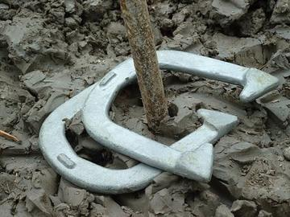
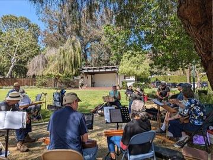
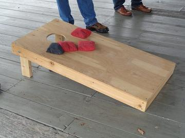
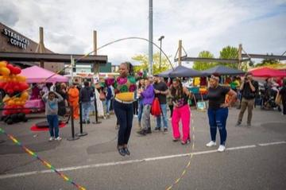
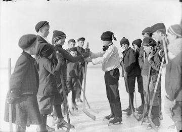
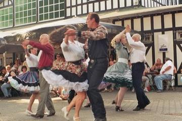
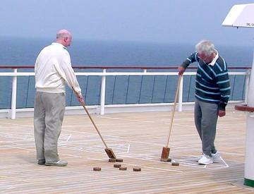
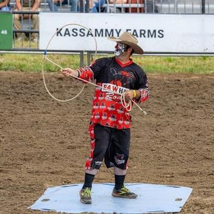
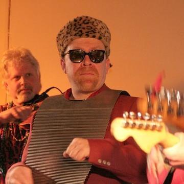

Classical Worlds 3



Mountain dulcimer
United States · Musical instruments
Crossroads and Golden Ages 6

Checkers
Bahamas +1 · Board and table games
Chickenfoot
United States · Board and table games

Spelling Bee
United States · Other traditions
Texas 42
United States · Board and table games
Wayfinder
United States +2 · Puzzles and mind games
Age of Contact and Craft 3


Modern Heritage 16






Table shuffleboard
United States · Dexterity and skill games

Trick Roping
United States · Dexterity and skill games
Living Traditions 6


Four Square
United States · Other traditions
Lei making
United States · Crafts and making
Paper Fortune Teller
United Kingdom +3 · Crafts and making
Rubboard zydeco rhythm
United States · Musical instruments
Ukulele strum-along
United States +1 · Musical instrumentsPlay preview · in the Music & Dance of the World app